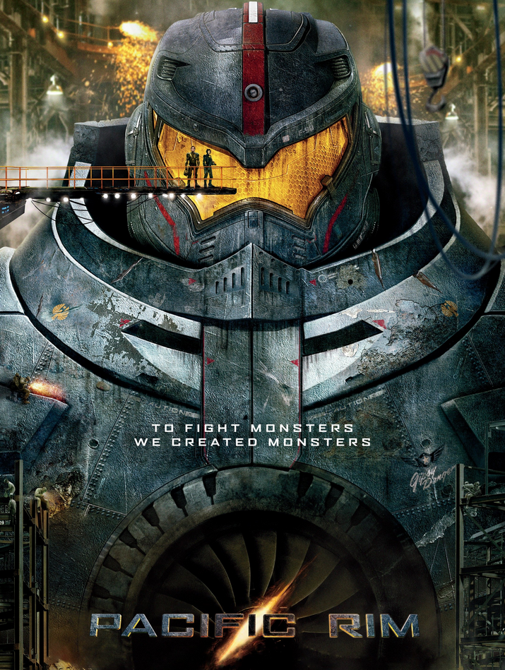
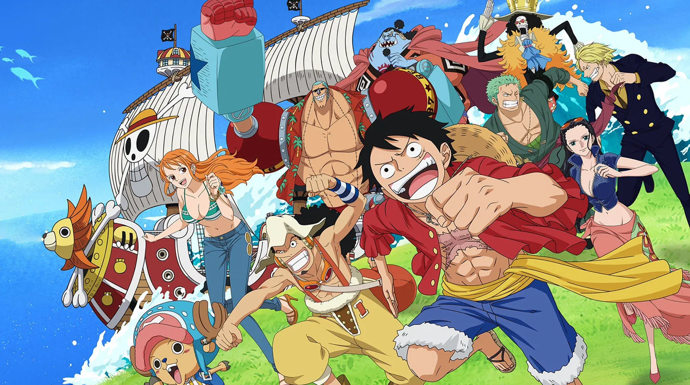
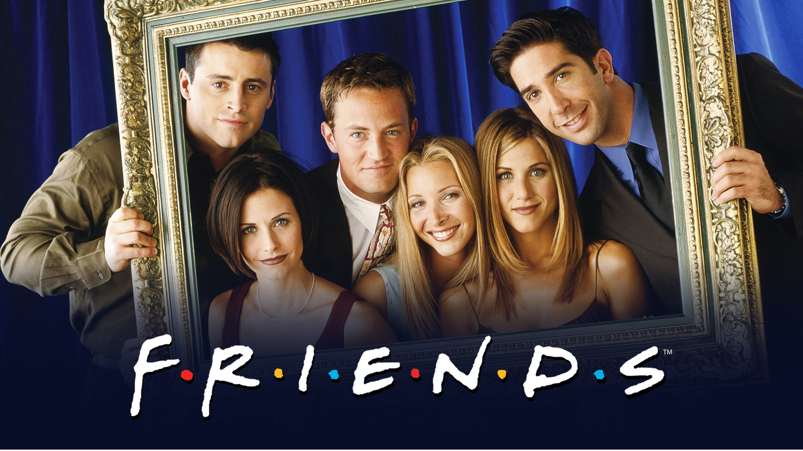

Pacific Rim is a simple movie that gets straight to the point. Giant robots vs giant monsters for the safty of earth. Great action with a simple plot means this movie can enterain audiance memmbers of all ages.
Some people will look at the length of One piece and be frieghtened off. After all the Manga series has been going on since 1997 and the anime adaptation for over 25 years. I think the length of the show is actually a strength and not a weakness. The show is silly, wierd, and very, VERY goofy, but has deep moments and reflects struggles in the real world in a fantastic way. The length of the show gives the Mangaka(Japanese title for manga creaters) room to fleash out charaters and for them to visably grow with out feeling rushed.
Friends is a show that I keep returning to over the years. Despite initailly airing in the mid 90's the shows themes of a group of friends struggling to make way in life is something that we all can relate to. After all in 2023 who cant sympathize with feeling lost in the world and not fitting it, while also failing at love? The show has great moments that have you cheering for the characters while having some lows that dont break you down, but keep the show grounded.
